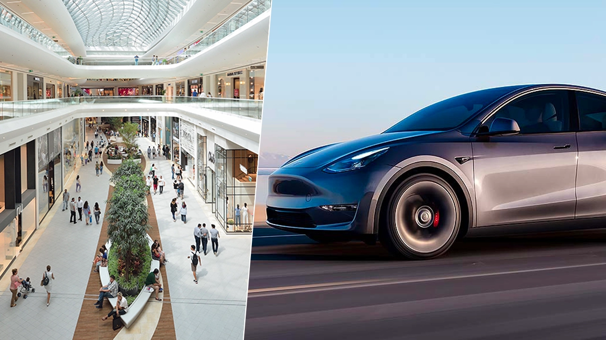

Tesla Türkiye ikinci mağazasını açıyor! İşte tarih
Ülkemize resmi olarak giriş yapan ve on binlerce sipariş alan Tesla Türkiye ikinci mağazasını açıyor: İşte Tesla Akasya AVM mağazası!

Kısa süre önce ülkemize resmi olarak giriş yapan ve on binlerce sipariş alan Tesla’nın lansmanından bugüne kadarki tüm süreci sizlere aktardık. Tesla Türkiye lansmanından sonra herhangi bir açıklama yapmadığı için çok fazla soru işareti var, fakat netleşen detaylarda var. Ülkemizde açılacak olan Tesla mağazalarından birisinin Kanyon AVM‘de diğerinin ise Akasya AVM‘de olacağı açıklanmıştı.
Türkiye lansmanı Kanyon AVM’de düzenledi ve kullanıcılar gidip oradaki alanda Tesla Model Y’yi inceleme fırsatı buldu. Akasya AVM’de açılacak olan mağaza konusundaki soru işaretleri, resmi açıklamanın gelmesiyle bugün ortadan kalktı.
Tesla Akasya AVM mağazası açılıyor!
Tesla Türkiye, Pop-Up mağazası ile 2 Mayıs tarihinde Apple Store’u da bünyesinde barındıran Akasya AVM‘de yerini alacak. Ülkemizde ilk etapta sadece Model Y satışa sunulduğu için şimdilik diğer modelleri sergilenmiyor. Fakat mağazaya giderek Model Y’yi detaylı bir şekilde inceleyebilirsiniz.
Kısa süre sonra Türkiye’den sipariş veren ilk kullanıcıların araçları teslim edilecek. Araçlar Tesla’nın Berlin’de açtığı Giga Factory‘den geliyor ve bu fabrika haftalık üretim kapasitesini 5000 araç seviyesine çıkardı. Şu anda bir Tesla siparişi vermek için internet sitesinden kendinize uygun aracı oluşturmanız ve 10 bin TL ön sipariş bedeli ödemeniz yeterli. Sıra size geldiğinde iletişime geçiliyor.